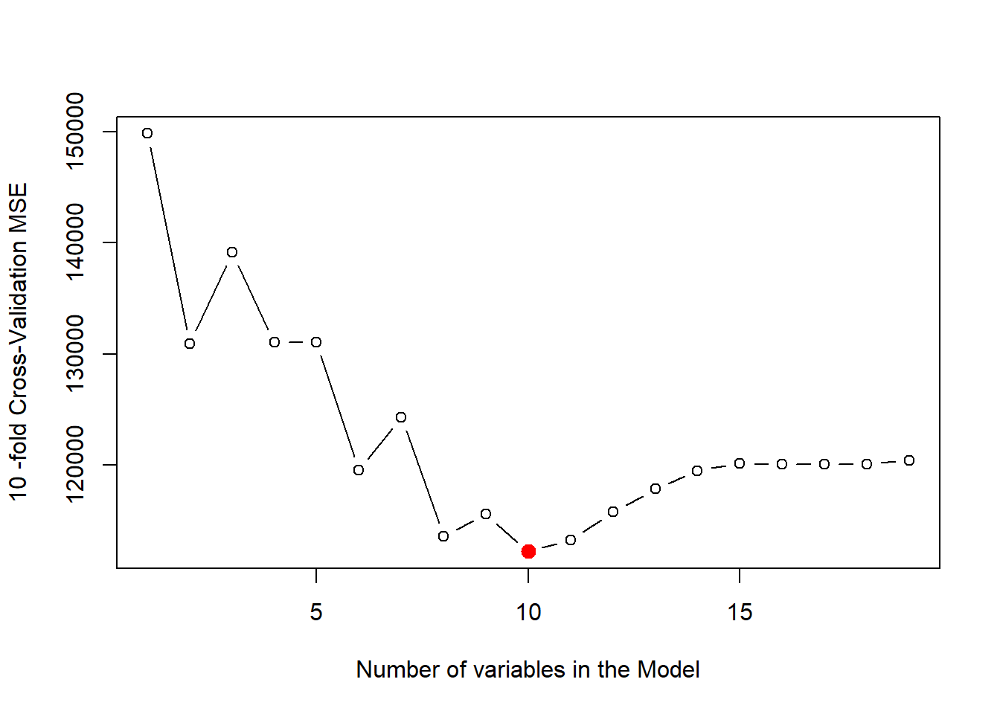
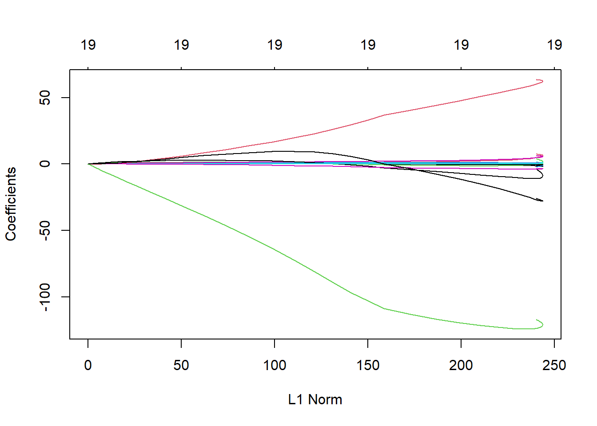
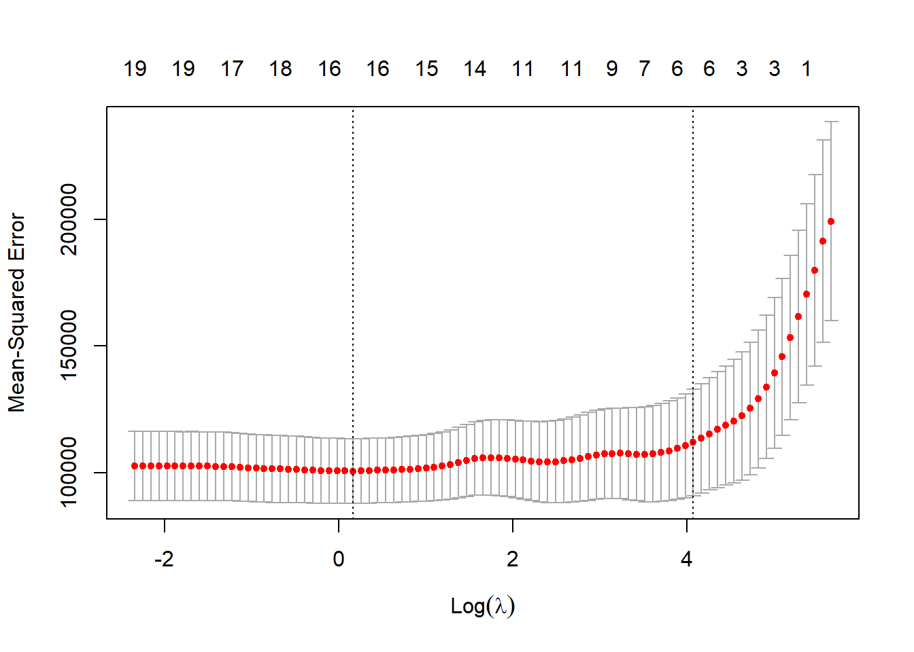
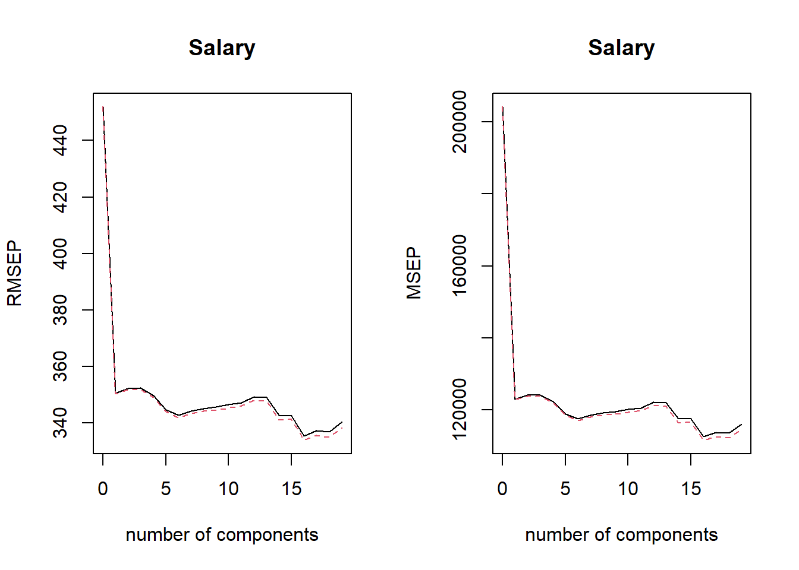
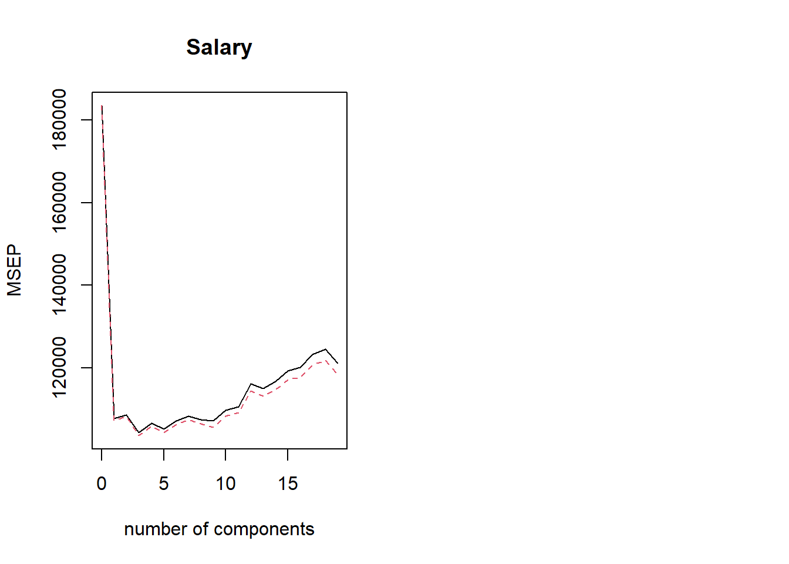

# Create an Object with Best Subset Selection performed on Hitters Data setregfit.trial <-regsubsets(Salary ~ ., data = Hitters)# Examine contents of summary of the regsubsets outputnames(regfit.trial)
We can use the regsubsets() function to do forward and backward selection as well. We use the same data set Hitters and compare the selected models of 7 variables from the three approaches: (1) Best Subset Selection (2) Forward Selection and (3) Backward Selection.
# Forward Selection; Listing the variables in 7 variable modelregfit.fwd <-regsubsets(Salary ~ ., data = Hitters, method ="forward")names(coef(regfit.fwd, 7))
# Create a nice table to display and compare the coefficientsComCoef7 <-data.frame(BestSubsetSelection =names(coef(regfit.full, 7)),ForwardSelection =names(coef(regfit.fwd, 7)),BackwardSelection =names(coef(regfit.bwd, 7)))ComCoef7
6.5.3 Choosing among Models using the Validation Set approach and Cross Validation
We create test and train boolean vectors to be used to subset the Hitters data set into a training subset and a validation subset. The, we use regsubsets() to find the Best Subset Selection model for \(k = 1 to p\) variables in the model. Finally, we will calculate the Mean Squared Error (MSE) for each of the models. This will allow us to see which model has the lowest MSE, i.e. Test Error on the Validation Set.
# Creating Training and Test boolean vectorsset.seed(5)train <-sample(c(TRUE, FALSE), size =nrow(Hitters), replace =TRUE)test <-!train# Run the Best Subset Selection on the training dataregfit.best <-regsubsets(Salary ~ ., data = Hitters[train, ], nvmax =19)# Creating a test matrix (X) with which we can multiply the coefficients of the# best model to generate predicted values of Y (i.e. Salary). The model.matrix()# creates matrices based on formulas (eg: including dummy variables etc.)test.matrix <-model.matrix(Salary ~ ., data = Hitters[test, ])# Create empty vector to store Validation Set Error Rates for each best modelValSetErrors <-rep(NA, 19)# Calculate Validation Set error rate for each model using loopsfor (i in1:19) { coeffs <-coef(regfit.best, id = i) # Extract coefficients in ith model pred <- test.matrix[, names(coeffs)] %*% coeffs # Calculate predicted Y ValSetErrors[i] <-mean((Hitters$Salary[test] - pred)^2)}# Find which Model has minimum MSEwhich.min(ValSetErrors)
[1] 10
# Display the coefficients used in the model with minimum MSEcoef(regfit.best, id =which.min(ValSetErrors))
# Finally, we obtain coefficient estimates from running the best subset selection# model on the complete data set. This will allow us to get better coefficient# estimates.regfit.best <-regsubsets(Salary ~ ., data = Hitters, nvmax =19)round(coef(regfit.best, id =10),digits =3)
Now, we can create an automated function to calculate MSE for each model of a regsubsets() object, so that we can use it in loops later when we use Cross-Validation.
predict.regsubsets <-function(object, newdata, id, ...){ formula <-as.formula(object$call[[2]]) # Extracting formula from regsubsets object coeffs <-coef(object, id) # Extracting coefficients with their names testmat <-model.matrix(formula, data = newdata) # Create test X matrix testmat[, names(coeffs)] %*% coeffs # Predicted values}
We now use Cross Validation, instead of Validation Set approach to find out the Test MSE.
# Create k folds in the data-set for k-fold Cross Validationk <-10set.seed(1)folds <-sample(1:k, size =nrow(Hitters), replace =TRUE)# table(folds) # To check : Each observation has been assigned one of the k folds# Create a matrix to store k Test MSEs of each of the 19 modelscv.errors <-matrix(data =NA,nrow = k, ncol =19,dimnames =list(NULL, 1:19))# Create two loops : (1) Outer Loop to select the cross-validation k fold and# then run regsubsets (2) Inner loop to find Test MSE of each on 1 to 19 variable# models in the k-th test foldfor (j in1:k) { reg.fit <-regsubsets(Salary ~ .,nvmax =19,data = Hitters[folds != j, ] )for (i in1:19) { pred <-predict.regsubsets(object = reg.fit, id = i,newdata = Hitters[folds == j, ] ) cv.errors[j, i] <-mean((Hitters$Salary[folds == j] - pred)^2) # Store MSE }}# Calculate mean MSE for each of 1 to 19 variable models. Plot MSEs.mean.cv.errors <-apply(cv.errors, MARGIN =2, FUN = mean)par(mfrow =c(1, 1))plot(mean.cv.errors,type ="b",xlab ="Number of variables in the Model",ylab =paste(k, "-fold Cross-Validation MSE", collapse =""))points(x =which.min(mean.cv.errors),y =min(mean.cv.errors),col ="red", pch =20, cex =2)

# Now, find coefficients for best model selected by CV, using regsubsets() on# full data setround(coef(regsubsets(Salary ~ ., Hitters, nvmax =19),id =which.min(mean.cv.errors)), 2)
We need to load the glmnet library to use the glmnet() function which can perform ridge regression and the Lasso. Further, we need to create an x matrix and a y vector to use in the glmnet() function.
library(glmnet)x =model.matrix(Salary ~ ., data = Hitters)[, -1] # remove intercept column with [,-1]y = Hitters$Salary
6.6.1 Ridge Regression
We can fit ridge regression using glmnet() with alpha = 0. First, we need to create a vector of possible values of lambda, lamvec to use in glmnet().
lamvec =10^seq(from =10, to =-2, length =100)# Fitting ridge regression modelridge.mod =glmnet(x, y, alpha =0, lambda = lamvec)# Examine some of the contents of a ridge regression object class(ridge.mod)
# Matrix containing the Coefficients for each value of lambda in a 20 X 100 matrixdim(coef(ridge.mod))
[1] 20 100
# Examining the ell-2 norm of the coefficients at some lambda values to check the# fact that at high lambda values, this ell-2 norm should be low (near zero)# Get the 25th Lambda value i.e. a large lambda value (we expect ell-2 norm to be low)ridge.mod$lambda[25]
[1] 12328467
sqrt(sum(coef(ridge.mod)[-1, 25]^2))
[1] 0.006553409
# Get the 75th Lambda value i.e. a small lambda value (we expect ell-2 norm to be high)ridge.mod$lambda[75]
[1] 10.72267
sqrt(sum(coef(ridge.mod)[-1, 75]^2))
[1] 140.3536
# Plot the coefficients simply using plot() on the glmnet objectplot(ridge.mod)

We can now try to predict the coefficients for a fixed arbitrary value of lambda = 50, which we may not have used in the original ridge regression fitting using glmnet().
Now, which is the best value of lambda to use for predicting the coefficients? We can answer this question using cross validation. First, we split half of sample as training set, and the remaining half as test set.
# Setting seed for replicability, and creating training and testing setsset.seed(1)train =sample(c(TRUE, FALSE), size =nrow(x), replace =TRUE)test =!train# Running Ridge Regression on Training Setridge.mod =glmnet(x[train,], y[train], alpha =0, lambda = lamvec, thresh =1e-12)# Calculate predicted MSE for some arbitrary lambda value, say 4ridge.pred =predict(ridge.mod, s =4, newx = x[test,])mean((ridge.pred - y[test])^2)
[1] 143937.4
# Calculate MSE for a very large lambda (i.e. NULL model, all coefficients nearly zero)ridge.pred =predict(ridge.mod, s =1e10, newx = x[test,])mean((ridge.pred - y[test])^2)
[1] 208338.9
# Re-check that this MSE is same as using mean of y as predicted value for all of test setmean( (mean(y[train]) - y[test] )^2 )
[1] 208338.9
# Both values are nearly the same. Further, at lambda = 4, MSE is lower than NULL model# Calculate MSE for lambda = 0 (i.e. least squares regression)# ridge.pred = predict(ridge.mod, x = x[test,], y = y[test],# s = 0, newx = x[test,], # exact = T)#mean((ridge.pred - y[test])^2)# Verify that the MSE is same as least squares regression# lmfit <- lm(Salary ~ ., Hitters, subset = train)# lm.pred <- predict(lmfit, newdata = Hitters[test,])# mean((lm.pred - y[test])^2)
Now, we use the cross-validation approach to select the lambda value with the lowest MSE. The function cv.glmnet() automatically performs this with a default value of folds = 10.
set.seed(3)cv.out =cv.glmnet(x[train, ], y[train], alpha =0)# Examine the output of cv.glmnet()class(cv.out)
# Finding the test MSE associated with the best lambda valuebestlam = cv.out$lambda.minridge.pred =predict(ridge.mod, s = bestlam, newx = x[test,])mean( (ridge.pred - y[test])^2 )
[1] 143953.8
# Finally, we find out the coefficients for all variables in Hitters for lambda # value of bestlam using the full datasetout =glmnet(x, y, alpha =0)round(predict(out, type ="coefficients", s = bestlam),3)[1:20, ]
# Using cross validation to find out the best lambda valueset.seed(3)cv.out <-cv.glmnet(x[train, ], y[train], alpha =1, )plot(cv.out)

bestlam <- cv.out$lambda.minbestlam
[1] 1.179335
# Finding Lasso predicted values on test set using best lambda valuelasso.pred <-predict(lasso.mod, s = bestlam, newx = x[test, ])# Calculating MSE at best lambda value with Lassomean((lasso.pred - y[test])^2)
[1] 141723.2
# Using full data to find coefficient values at best lambda valuesout <-glmnet(x, y, alpha =1)coeffs <-predict(out, s = bestlam, type ="coefficients")[1:20, ]coeffs[coeffs !=0]
We can fit the Principal Components Regression using the pcr() function which is a part pls library.
library(pls)library(ISLR)set.seed(1)# Recreating data sets once againdata("Hitters")Hitters <-na.omit(Hitters)train <-sample(1:nrow(Hitters), size =nrow(Hitters) /2)test <--trainx <-model.matrix(Salary ~ ., data = Hitters)[, -1]y <- Hitters$Salary# Fitting Principal Components Regression on the Hitters datapcr.fit <-pcr(Salary ~ ., data = Hitters, scale =TRUE, validation ="CV")# Examining the pcr() object and its summaryclass(pcr.fit)
# Using validationplot() to see the results of pcr() - plots with RMSE and MSEpar(mfrow =c(1, 2))validationplot(pcr.fit)validationplot(pcr.fit, val.type ="MSEP")

# Performing PCR on training set and evaluating MSE on test setpcr.fit <-pcr(Salary ~ .,data = Hitters, subset = train,scale =TRUE, validation ="CV")validationplot(pcr.fit, val.type ="MSEP")# Using ncomp = 7, to find predicted values and MSEpcr.pred <-predict(pcr.fit, newdata = x[test, ], ncomp =7)mean((pcr.pred - y[test])^2)
[1] 140751.3
# Finally, we fit the PCR model with M=7 to the entire data setpcr.fit <-pcr(Salary ~ ., data = Hitters, scale =TRUE, ncomp =7)summary(pcr.fit)
Data: X dimension: 263 19
Y dimension: 263 1
Fit method: svdpc
Number of components considered: 7
TRAINING: % variance explained
1 comps 2 comps 3 comps 4 comps 5 comps 6 comps 7 comps
X 38.31 60.16 70.84 79.03 84.29 88.63 92.26
Salary 40.63 41.58 42.17 43.22 44.90 46.48 46.69

6.7.2 Partial Least Squares
We now implement the Partial Least Squares method using the plsr() function in the pls library. The syntax is similar to the pcr() function.